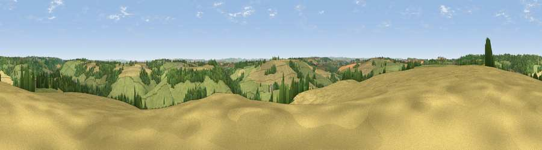

Viewpoint near Wellow
#18040 in England · top 31% of its area beats it · near WellowWhere it is
The exact computed spot (ST 74525 56725). Click the marker for map links.
The view, rendered

A 360° render of this exact spot computed from the terrain model, tree cover and land cover — summer colours, afternoon light, calibrated against photographs of famous viewpoints. Real trees, hedges and buildings will differ in detail.
The panorama
Grey silhouette: terrain skyline in each direction (720 bearings, Earth curvature and refraction included). Dashed green: skyline with trees (+15 m) and buildings (+8 m) as obstacles. Blue strip: how far the ground is visible on each bearing.
Where the view opens
Wedge length = distance to the farthest visible ground on that bearing (vegetation-aware). Rings at 10, 25 and 50 km.
What fills the view
48% cropland · 35% grassland · 15% woodland · 2% built-up
Angular shares of the visible panorama (visual magnitude), not map area. Landscape diversity 0.47 (0–1 Shannon).
Key numbers
More beautiful places nearby
The staircase of upgrades: each row has a higher view potential than everything closer. Driving times are estimates from straight-line distance, calibrated against real road routing — check an actual route before setting out.
| Place | Direction | Drive | Score |
|---|---|---|---|
| Viewpoint near Peasedown St. John | WNW · 3 km | ~7 min | 60.1 |
| Viewpoint near Limpley Stoke | NE · 5 km | ~11 min | 60.8 |
| Viewpoint near Combe Hay | NNW · 5 km | ~11 min | 66.1 |
| Viewpoint near Inglesbatch | NW · 5 km | ~11 min | 68.8 |
| Viewpoint near Stanton Prior | NW · 10 km | ~19 min | 70.7 |
| Viewpoint near Kelston | NNW · 11 km | ~21 min | 74.2 |
| Viewpoint near North Stoke | NNW · 13 km | ~23 min | 75.4 |
| Hanging Hill | NNW · 14 km | ~25 min | 76.4 |
51.30907, -2.36686 · source: screening · position refined by local search. Computed location — check access rights before visiting.